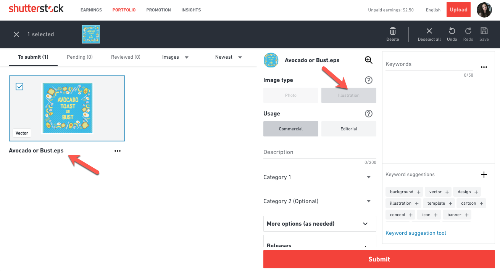

FAQ
Frequently Ask Question
Cara
Upload
Konten
Konten editorial dapat digunakan untuk mengilustrasikan peristiwa yang layak diberitakan dan peristiwa terkini. Konten ini juga dapat digunakan untuk mengilustrasikan subjek yang menarik bagi manusia, termasuk seni, bisnis, budaya, kesehatan dan kebugaran, gaya hidup, acara sosial, teknologi, dan perjalanan. Shutterstock mengklasifikasikan konten editorial ke dalam tiga kategori:
- Konten Editorial Dokumenter: Konten yang mendokumentasikan peristiwa kehidupan nyata yang sebenarnya sebagai catatan faktual. Misalnya, foto parade atau setelah bencana alam.
- Konten Editorial Ilustrasi: Konten yang mengilustrasikan subjek yang menarik perhatian manusia melalui pementasan. Misalnya, bidikan produk alat rumah tangga yang populer atau gambar pementasan orang yang sedang minum minuman dari merek yang mudah dikenali.
- Ilustrasi, Vektor, dan Animasi Editorial: Ilustrasi, vektor, dan animasi yang menggambarkan peristiwa yang layak diberitakan, peristiwa terkini, dan subjek yang menarik perhatian manusia. Misalnya, ilustrasi selebriti atau tokoh masyarakat.
Shutterstock selalu mencari konten baru untuk ditambahkan ke koleksi kami. Menyumbangkan video ke Shutterstock gratis, dan Anda akan tetap memiliki hak cipta atas karya Anda. Untuk mengirimkan karya Anda untuk ditinjau, Anda harus memiliki akun kontributor Shutterstock.
Mengirimkan video ke Shutterstock sangatlah mudah. Cukup unggah video Anda dengan deskripsi dan kata kunci. Kami akan mengevaluasi kiriman Anda dan mempublikasikan konten yang disetujui ke portofolio Anda.
Langkah 1: Unggah konten Anda
Mengunggah video melalui situs web semudah menyeret file Anda ke halaman Unggah. Anda juga dapat mengunggah video melalui FTPS. Anda dapat mempelajari lebih lanjut tentang pengunggahan FTPS di sini. Jika Anda mengalami masalah saat mengunggah, lihat panduan pemecahan masalah kesalahan pengunggahan dan artikel tentang kesalahan pengunggahan video ini. Anda dapat mengunggah hingga 100 file sekaligus melalui halaman Unggah web.
Langkah 2: Penandaan dan metadata
Setelah Anda berhasil mengunggah klip Anda, Anda harus memasukkan judul (deskripsi), kata kunci, dan setidaknya 1 kategori pada halaman Kirim konten. Informasi ini dikenal sebagai metadata dan memungkinkan orang untuk menemukan video Anda.
Anda dapat memilih beberapa video sekaligus untuk menambahkan kata kunci dan kategori yang sama untuk menyederhanakan pengiriman konten. Kami juga menawarkan opsi untuk mengunggah metadata melalui file CSV untuk pengiriman yang lebih besar.
Anda dapat memasukkan kata kunci Anda sendiri atau memilih kata kunci yang sesuai dari saran kata kunci kami, yang secara otomatis dihasilkan oleh teknologi visi komputer kami. Teknologi ini menemukan gambar yang secara visual mirip dengan gambar yang Anda kirimkan dan menyarankan kata kunci yang relevan dan pernah berhasil untuk Anda pilih.
Langkah 3: Kirim konten Anda
Setelah konten Anda siap, klik Kirim untuk mengirimkannya untuk ditinjau.
Jika tidak ada yang terjadi setelah mengklik Kirim, kemungkinan besar karena kiriman Anda mengandung kesalahan. Kesalahan yang paling umum adalah kata kunci yang salah eja, yang ditandai dengan warna merah. Pelajari lebih lanjut tentang cara memperbaiki kesalahan di halaman Kirim konten.
Jika Anda belum siap untuk mengirimkannya sekarang, Anda dapat mengeklik Simpan di bagian kanan atas halaman Kirim konten dan menyimpan konten yang Anda unggah untuk dikirimkan nanti. Anda memiliki waktu hingga 21 hari untuk mengirimkan konten yang diunggah untuk ditinjau. Jika Anda tidak mengirimkan karya Anda kepada kami dalam jangka waktu tersebut, maka karya Anda akan secara otomatis dihapus dari server kami.
Shutterstock selalu mencari konten baru untuk ditambahkan ke koleksi kami. Menyumbangkan gambar ke Shutterstock adalah gratis, dan Anda akan tetap memiliki hak cipta atas karya Anda. Untuk mengirimkan karya Anda untuk ditinjau, Anda harus memiliki akun kontributor Shutterstock.
Mengirimkan vektor ke Shutterstock sangatlah mudah. Cukup unggah file Anda dengan deskripsi dan kata kunci. Kami akan mengevaluasi kiriman Anda dan mempublikasikan konten yang disetujui ke portofolio Anda.
- sampai 100 MB
- tidak kurang dari 4 MP dan tidak lebih dari 25 MP - aturan ini berlaku untuk ukuran kotak pembatas di sekeliling karya seni Anda, bukan artboard Anda
- harus kompatibel dengan Adobe Illustrator 8 atau 10.
Langkah 1: Unggah konten Anda Shutterstock menawarkan dua opsi untuk mengunggah ilustrasi vektor Anda: melalui peramban web atau melalui FTPS.
File dapat diunggah langsung dari halaman Unggah di akun Anda. Klik Unggah di bagian atas halaman akun kontributor Anda dan cukup seret dan letakkan file ke dalam jendela pengunggahan atau pilih beberapa file dari desktop Anda. Anda dapat mengunggah hingga 100 file sekaligus melalui halaman Unggah web
Untuk mengirimkan vektor untuk ditinjau, Anda hanya perlu mengirimkan file EPS, kami akan secara otomatis menghasilkan gambar JPEG yang cocok untuk Anda!
Step 2: Tagging and metadata
File vektor dapat diidentifikasi dari ekstensi file dan secara otomatis ditandai sebagai ilustrasi saat diunggah. Setelah ilustrasi vektor Anda berhasil diunggah, Anda harus memasukkan judul (deskripsi), 7-50 kata kunci, dan setidaknya 1 kategori. Informasi ini dikenal sebagai metadata dan memungkinkan orang untuk menemukan foto Anda. Pelajari lebih lanjut tentang persyaratan metadata dan praktik terbaik sebelum Anda memulai.
Anda dapat memilih beberapa gambar sekaligus untuk menambahkan kata kunci dan kategori yang sama untuk menyederhanakan pengiriman konten. Kami juga menawarkan opsi untuk mengunggah metadata melalui file CSV untuk kiriman berukuran besar.

Anda dapat memasukkan kata kunci Anda sendiri, atau memilih kata kunci yang sesuai dari saran kata kunci kami. Saran kata kunci kami pada halaman Kirim konten didukung oleh teknologi visi komputer kami. Teknologi ini menemukan gambar yang secara visual mirip dengan gambar yang Anda kirimkan dan menyarankan kata kunci yang relevan dan telah berhasil untuk Anda pilih.
Langkah 3: Kirimkan konten Anda
Setelah konten Anda siap, klik Kirim untuk mengirimkannya untuk ditinjau.
Jika tidak ada yang terjadi setelah mengklik Kirim, kemungkinan besar karena kiriman Anda mengandung kesalahan. Kesalahan yang paling umum adalah kata kunci yang salah eja, yang ditandai dengan warna merah
Jika Anda belum siap untuk mengirimkannya saat ini, Anda dapat mengeklik Simpan di bagian kanan atas halaman Kirim konten dan menyimpan konten yang Anda unggah untuk dikirimkan di lain waktu. Anda memiliki waktu hingga 21 hari untuk mengirimkan konten yang diunggah untuk ditinjau. Jika Anda tidak mengirimkan karya Anda kepada kami dalam jangka waktu tersebut, maka karya Anda akan secara otomatis dihapus dari server kami.
Langkah 1: Unggah konten Anda
Kami menerima file JPEG dan TIFF yang berukuran minimal 4 megapiksel (MP). File berukuran di bawah 50 megabyte (MB) dapat diunggah langsung dari halaman Unggah di akun Anda dengan mengeklik +Tambah di bagian atas halaman akun kontributor Anda. Dari halaman Unggah, Anda dapat dengan mudah menyeret dan menjatuhkan hingga 100 file sekaligus ke dalam jendela pengunggahan atau memilih beberapa file dari desktop Anda.
Langkah 2: Penandaan dan metadata
Setelah gambar Anda berhasil diunggah, Anda harus memasukkan judul (Deskripsi), 7-50 kata kunci, dan setidaknya 1 kategori. Informasi ini dikenal sebagai metadata dan memungkinkan orang untuk menemukan foto Anda. Pelajari lebih lanjut tentang persyaratan metadata dan praktik terbaik sebelum Anda memulai.
Anda dapat memilih beberapa video sekaligus untuk menambahkan kata kunci dan kategori yang sama untuk menyederhanakan pengiriman konten. Kami juga menawarkan opsi untuk mengunggah metadata melalui file CSV untuk pengiriman yang lebih besar.
Anda dapat memasukkan kata kunci Anda sendiri atau memilih kata kunci yang sesuai dari saran kata kunci kami, yang secara otomatis dihasilkan oleh teknologi visi komputer kami. Teknologi ini menemukan gambar yang secara visual mirip dengan gambar yang Anda kirimkan dan menyarankan kata kunci yang relevan dan pernah berhasil untuk Anda pilih.
Langkah 3: Kirim konten Anda
Setelah konten Anda siap, klik Kirim untuk mengirimkannya untuk ditinjau.
Jika tidak ada yang terjadi setelah mengklik Kirim, kemungkinan besar karena kiriman Anda mengandung kesalahan. Kesalahan yang paling umum adalah kata kunci yang salah eja, yang ditandai dengan warna merah. Pelajari lebih lanjut tentang cara memperbaiki kesalahan di halaman Kirim konten.
Jika Anda belum siap untuk mengirimkannya sekarang, Anda dapat mengeklik Simpan di bagian kanan atas halaman Kirim konten dan menyimpan konten yang Anda unggah untuk dikirimkan nanti. Anda memiliki waktu hingga 21 hari untuk mengirimkan konten yang diunggah untuk ditinjau. Jika Anda tidak mengirimkan karya Anda kepada kami dalam jangka waktu tersebut, maka karya Anda akan secara otomatis dihapus dari server kami.
Dalam beberapa kasus, Anda dapat mengirimkan ulang konten. Tim peninjau kami akan meninjau konten yang telah dikirimkan sebelumnya sesuai dengan panduan di bawah ini. Pastikan Anda memilih "Sebelumnya dikirim" pada kolom Catatan untuk peninjau. Tidak ada kewajiban untuk menghubungi kami sebelum mengirim ulang, kecuali jika Anda diinstruksikan untuk melakukannya.
Konten yang ditolak sebelumnya
- Anda tidak setuju dengan keputusan pengulas dan Anda ingin karya Anda diulas oleh pengulas lain.
- Anda telah melakukan koreksi yang diperlukan untuk mengatasi alasan penolakan awal.
Konten yang telah disetujui sebelumnya
- Anda menemukan kesalahan atau ingin memperbaiki karya yang telah disetujui sebelumnya, tetapi Anda harus menghapus file asli terlebih dahulu sebelum mengirimkan ulang versi yang telah diperbaiki. Konten yang telah disetujui tidak dapat ditimpa dengan versi baru, sehingga riwayat unduhan dan peringkat mesin pencari tidak akan ditransfer ke versi baru karya Anda.
- Anda menghapusnya dari portofolio Anda karena alasan kontrak (seperti eksklusivitas sementara), dan sekarang Anda dapat melisensikannya lagi.
You may not resubmit previously approved content if:
- Gambar tersebut dihapus dari portofolio Anda oleh perwakilan Shutterstock (atau Anda diinstruksikan untuk menghapusnya) karena pertimbangan hukum seperti pelanggaran merek dagang, kekayaan intelektual, atau hak cipta.
- Anda membeli konten berhak cipta dari kontributor Shutterstock lain yang akunnya dihentikan oleh perwakilan Shutterstock